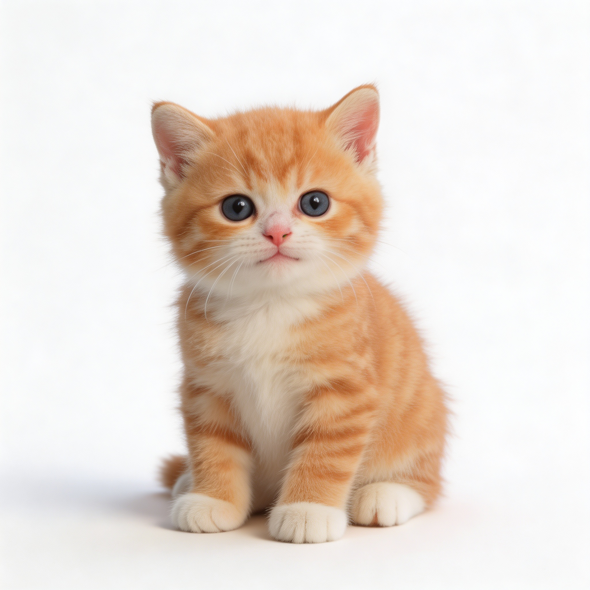

可交互演示
FocusCat 专注猫
完整还原 Android App 的全部界面与交互
点击底部 Tab 切换页面，投喂猫咪，开启专注模式
小橘
橘猫

猫咪刚认识你，多投喂几次，它会越来越亲近你
好感度: 0
称号: 初识之友
投喂 0 / 10 次
食物库存
成就
守护已关闭
开启后才会拦截约束应用
链路诊断
提示：在系统设置中授权后返回本页，状态会自动更新
已保护的 App
0
还没有添加约束应用
把容易让你分心的应用加进来
每次打开都会先弹反思问答
每次打开都会先弹反思问答
数据统计
今日专注
0m
今日拦截
0
总专注时长
2h 15m
总拦截次数
8
专注时长
应用拦截排行
设置
后台保活引导
守护服务被杀？点这里查看设置方法
通用设置
切换猫咪
开机自启动
守护通知
持续使用再次提醒
持续使用再次提醒
再次提醒间隔（5-120 分钟）
分钟
范围 5-120 分钟，0 = 关闭
自定义与数据
反思问题管理
导出数据
专注猫
版本 v1.0.0 (1)
实机录屏
手机实机运行
完整录制 FocusCat 在 Android 手机上的运行流程
含 idle 待机 / 投喂进食 / 专注模式 / 应用拦截
正在加载视频…